Photosynthesis and respiration are the two essential processes that allow life to sustain on earth .They are in fact a cycle
& this cycle itself is THE CIRCLE OF LIFE — plants help animals breathe by providing them with Oxygen : O2 , and animals help plants
"breathe" by providing them with Carbon-dioxide : CO2 .The earth what YOU see as it is , is due to this delicate equlibrium maintained
by plants & animals , the two major pillars of our ecosystem.
Being a man made zoo , Dehiwala Zoological Garden has become a paradise of nature where that natural equilibrium is meticuliously
maintained throughout our premises allowing our visitors to experience this mind blowing natural ecosystem both by our lavish
densely foliaged forest like garden & the animals who feel safe & secure within this green home that we have created for them .
Take a tour & enjoy the virtual experience from the list of the most popular animals & plants provided here which is just a fraction of what
our beautiful zoological dwells .
SOME HAND-FULL OF SHOW STOPPER ANIMALS IN OUR ZOO |
|
|---|---|
| ASIAN ELEPHANT | |
|
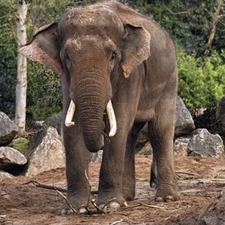 |
Physical description : |
| GRIZZLY BEAR | |
|
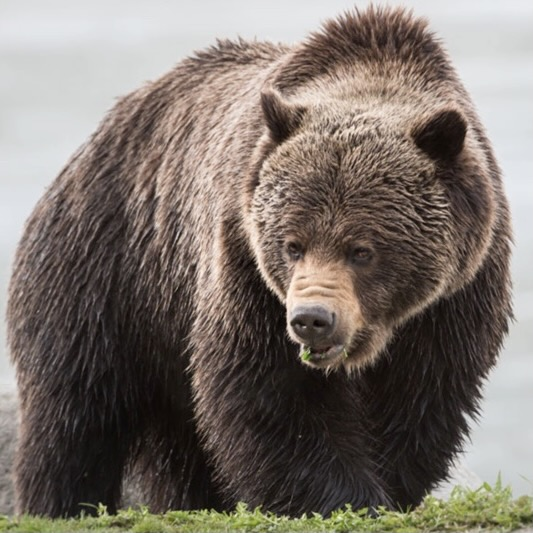 |
General Habitat : |
| COYOTE FOX | |
|
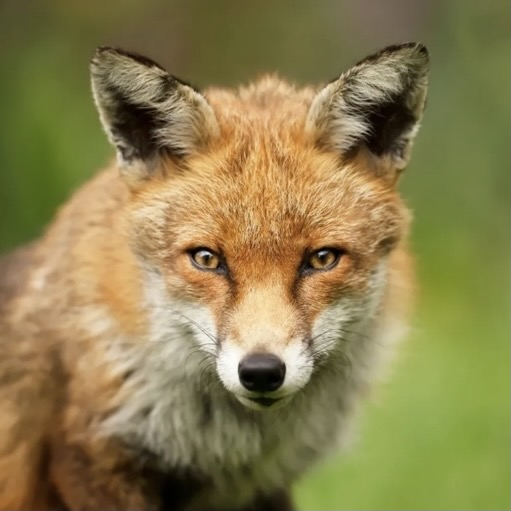 |
Identification : |
| GIRAFFE | |
|
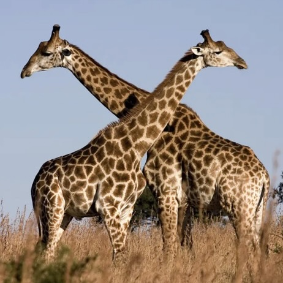 |
Description :
These creatures are relatively specialized to specific habitats. Though they can survive in a number of different ecosystems they have preferences for specific types of trees. This means that they thrive in environments like savannahs and sparse woodlands. They are more common in open woodlands than they are in more dense vegetation. When food is more scarce they tend to congregate around evergreen trees and bushes. Distribution of the Giraffe : There are a number of different subspecies (or species depending on what research you believe) spread across different regions of Africa. Some populations are quite fragmented, putting them in danger of genetic inbreeding. Some populations are found in southern Africa, eastern Africa, and a few areas of sub-Saharan Africa. Diet of the Giraffe : These large mammals are herbivores, which means that they primarily feed on plants. Their primary diet is the leaves of trees and bushes, but they will also eat branches, bark, twigs, and some fruit. Some of their preferred plant species are acacia, apricot, and mimosa trees. They use their long tongues to carefully pluck and strip leaves from branches. |
| RHINOCEROS | |
|
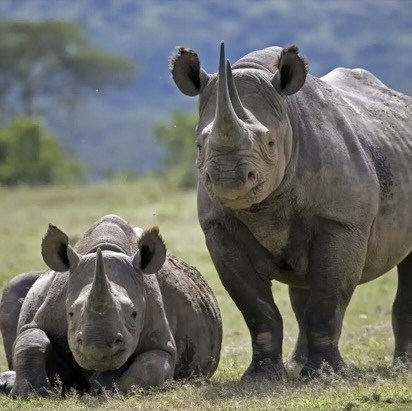 |
Size and Weight : |
| If YOU wish to provide us with additional informtion or have doubts about the above information please do |
|
OUR SILENT EMERALD BEAUTIES |
||||||
|---|---|---|---|---|---|---|
| PLANT CATAGORY | PLANT NAMES | DESCRIPTION | EXAMPLE IMAGE | |||
| 01. | CALADIUM |
|
Caladiums have become one of the most popular foliage plants for shady or semi-shady gardens—with
many recent introductions being sun tolerant. Each leaf seems to be hand painted with striking
combinations of green, white, pink, and red. Although these tropical South American natives thrive in
hot, humid weather, they can be grown as summer bulbs in more temperate climates, or even as houseplants
given the right conditions.With a little pampering, these exotic shade dwellers create a glorious display
rivaling that of any flowering plant. ( Image : CALADIUM - Freida Hemple ) |
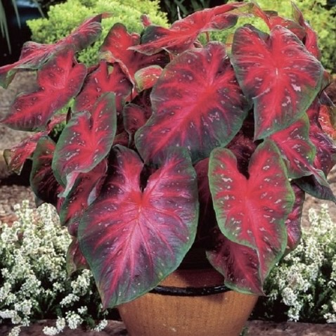 | ||
| 02. | VINES PLANTS |
|
By general definition, a vine is an herbaceous or nonwoody plant with thin stems that uses neighboring
plants, rocks, trees, fences or other structures for physical support. These plants climb, creep and sprawl,
often spreading out horizontally, as well as mounting vertically. Common examples of plants that meet the
classic definition of a vine include members of the gourd family and several flowering plants in the bindweed
family, such as the annual morning glory.Despite their inability to support their own weight, vines have
remarkable tensile strength. ( Image : Wisteria ) |
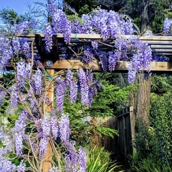 | ||
| 03. | PALM TREEES |
|
There are about 2600 species of palm trees, most of them living in tropical, subtropical, and warm
temperate climates. Palms are one of the best known and most widely planted tree families. They have
held an important role for humans throughout much of history. Many common products and foods come from
palms. They are often used in parks and gardens that are in areas that do not have heavy frosts.
In the past palms were symbols of victory, peace, and fertility. Today palms are a popular symbol
for the tropics and for vacations. ( Image : Sago Palm ) |
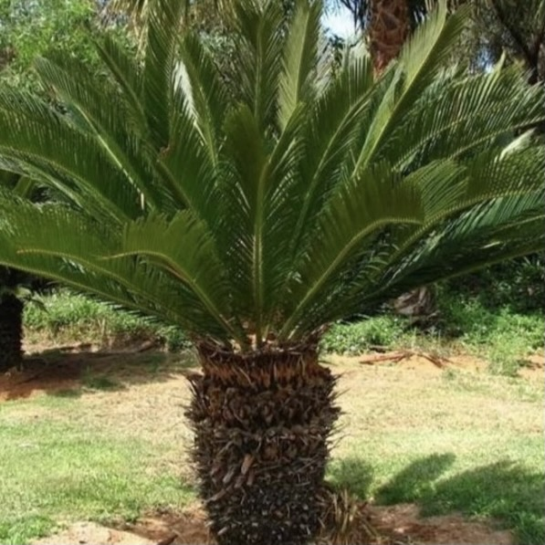 | ||
| 04. | WATER PLANTS |
|
Aquatic plants require special adaptations for living submerged in water, or at the water's surface.
The most common adaptation is the presence of lightweight internal packing cells, aerenchyma, but
floating leaves and finely dissected leaves are also common. Aquatic plants can only grow in water or
in soil that is frequently saturated with water. They are therefore a common component of wetlands.
One of the largest aquatic plants in the world is the Amazon water lily; one of the smallest is the
minute duckweed. ( Example Image : Water Lily ) |
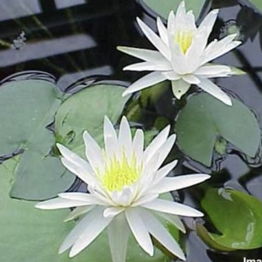 | ||
| 05. | CACTUS |
|
cactus, (family Cactaceae), plural cacti or cactuses, flowering plant family with nearly 2,000
species and 139 genera. Cacti are native through most of the length of North and South America, from
British Columbia and Alberta southward; the southernmost limit of their range extends far into Chile
and Argentina. Mexico has the greatest number and variety of species. The only cacti possibly native
to the Old World are members of the genus Rhipsalis, occurring in East Africa, Madagascar, and
Sri Lanka. Although a few cactus species inhabit tropical or subtropical areas, most live in and
are well adapted to dry regions. ( Image : Saguaro Cactus ) |
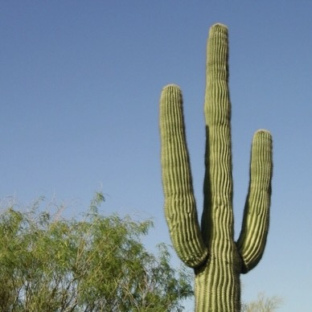 | ||
| 06. | AGAVE |
|
agave, (genus Agave), genus of the some 200 species of the family Asparagaceae native to arid and
semiarid regions of the Americas, particularly Mexico, and the Caribbean. The genus contains a number
of economically important species, especially those required for the production of mescal liquors,
including the blue agave used for tequila, Sisal for henequen and cantala are significant sources of
fibre and are of interest as potential bioenergy crops. The century plant, or maguey , and blue agave
are the primary sources of agave nectar, a syrupy sweetener. Additionally, a number of species are grown
as ornamentals in desert landscaping. ( Image : Queen Victoria Agave ) |
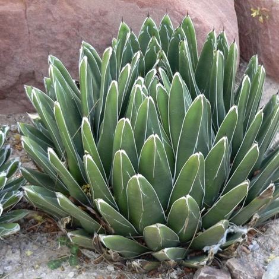 | ||
| 07. | CALATHEA |
|
There are many plants used for indoor decoration and indoor landscaping purposes. They brighten
offices, lobbies, meeting rooms and other interior areas and there are numerous benefits of plants for
offices and workspaces. Sometimes offices and businesses prefer a pop of green and some prefer to have
bright, colorful blooming plants. However, one of the key prerequisites of office plants is that they
be relatively easy to care for and able to thrive in places with low light. ( Image : Zebra plant ) |
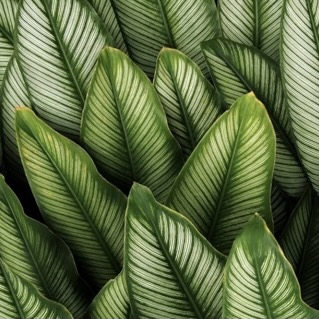 | ||
| 08. | ANGLONEMA |
|
These are evergreen perennials with stems growing erect or decumbent and creeping. Stems that grow
along the ground may root at the nodes. There is generally a crown of wide leaf blades which in wild
species are often variegated with silver and green coloration. The inflorescence bears unisexual f
lowers in a spadix, with a short zone of female flowers near the base and a wider zone of male flowers
nearer the tip. The fruit is a fleshy berry that ripens red. The fruit is a thin layer covering one
large seed. Plants of the genus are native to humid, shady tropical forest habit. ( Image : Emerald Bay ) |
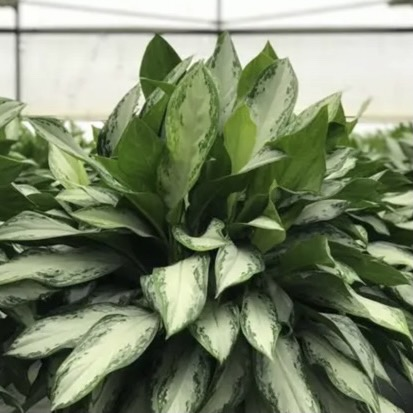 | ||
| 09. | PHILODENDRON |
|
The foliage of philodendrons is usually green but may be coppery, red, or purplish; parallel leaf
veins are usually green or sometimes red or white. Juvenile and adult phases differ, making it almost
impossible to identify different species of small plants.Most philodendrons are great climbers, usually
growing upward by wrapping their modified roots around the trunks of trees. Once they have worked their way up to the canopy, they often transform
themselves into epiphytes. Plants with this life strategy are called secondary hemiepiphytes.
Unlike most plants, the seedlings of hemiepiphytes do not grow toward the Sun; instead they grow
toward a tree trunk. ( Image : Philodendron Erubescens ) |
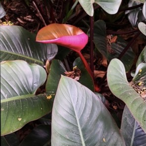 | ||
| 10. | FLORAL TEA PLANTS |
|
Floral teas feature dried flowers like jasmine, rose, lavender, and chamomile in soothing, aromatic
blends that are full of flavor packed with anti oxidents .For centuries, flower blossoms have been
blended with tea and other herbs to create tasty and medicinal brews. Whether you’re dreaming of spring
flowers, looking for an iced tea to enjoy in the summer heat, or simply interested in teas with a flowery
note, a floral tea is sure to hit the spot! ( Image : Roses ) |
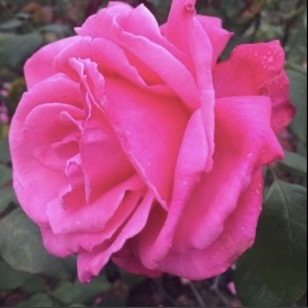 | ||
| If YOU wish to provide us with additional informtion or have doubts about the above information please do |
||||||
It is our utmost pleasure to gather these list of baby animals that you can add to your knowledge book.As much as you adore baby animals
it is our belief that you will admire what these cute snuggly babies are called as and it is worth mentioning that some animals share the
same baby animal name like pup and calf....